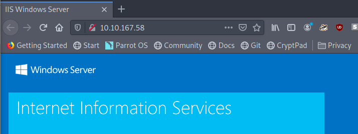

Task 2 Activate Forward Scanners and Launch Proton Torpedoes
How many ports are open on our target system?
sudo nmap -Pn -A 10.10.167.58 (-Pn had to be used because otherwise nmap couldn't get any results)
Answer: 2 (80 & 3389)
Looks like there's a web server running, what is the title of the page we discover when browsing to it?

Answer: IIS Windows Server
Interesting, let's see if there's anything else on this web server by fuzzing it. What hidden directory do we discover?
gobuster dir -u 10.10.167.58 -w /usr/share/wordlists/dirbuster/directory-list-2.3-small.txt -t 30
Navigate to our discovered hidden directory, what potential username do we discover?
Answer: Wade
Crawling through the posts, it seems like our user has had some difficulties logging in recently. What possible password do we discover?
/retro/index.php/2019/12/09/ready-player-one/ reveals that Wade uses the name of Wade Watts' avatar in the franchise as password.
Answer: Parzival
Log into the machine via Microsoft Remote Desktop (MSRDP) and read user.txt. What are it's contents?
Answer: THM{HACK_PLAYER_ONE}